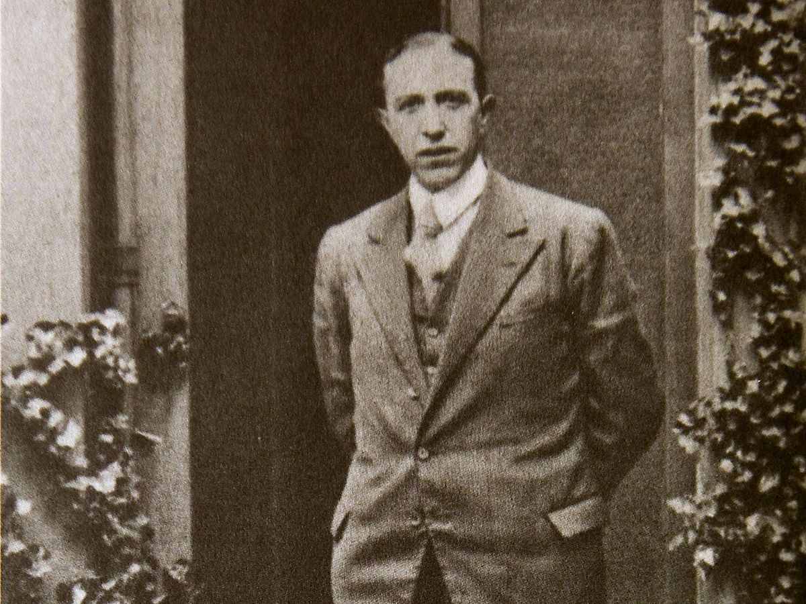

Pedro Salinas Serrano (Madrid, 27 de noviembre de 1891-Boston, 4 de diciembre de
1951)1 fue un escritor español conocido sobre todo por su poesía y ensayos.
Dentro del contexto de la generación del 27 se le considera uno de sus mayores
poetas. Sus traducciones de Proust contribuyeron al conocimiento del novelista f
rancés en el mundo hispanohablante. Al concluir la guerra civil española se exilió
en Estados Unidos hasta su muerte.

Ayer te besé en los labios. Te besé en los labios. Densos, rojos. Fue un beso tan corto, que duró más que un relámpago, que un milagro, más. El tiempo después de dártelo no lo quise para nada ya, para nada lo había querido antes. Se empezó, se acabó en él. Hoy estoy besando un beso; estoy solo con mis labios. Los pongo no en tu boca, no, ya no… -¿Adónde se me ha escapado?-. Los pongo en el beso que te di ayer, en las bocas juntas del beso que se besaron. Y dura este beso más que el silencio, que la luz. Porque ya no es una carne ni una boca lo que beso, que se escapa, que me huye. No. Te estoy besando más lejos.